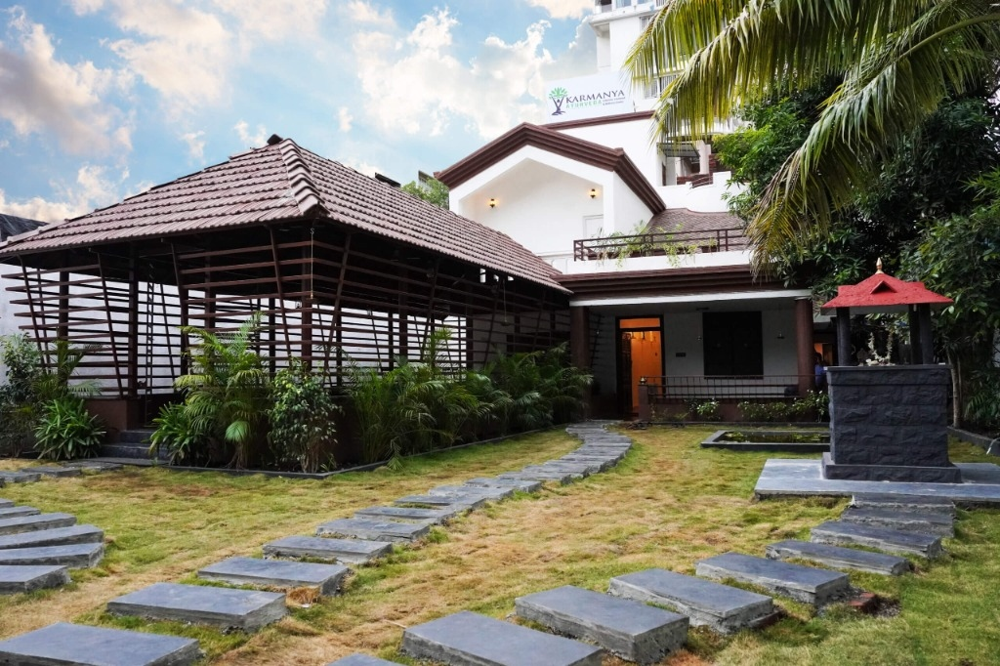
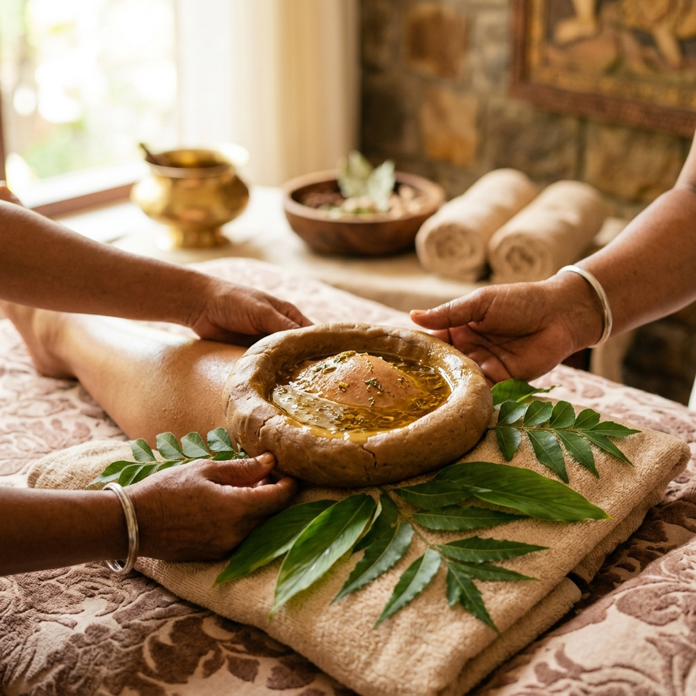

Visit Our Ayurveda Clinic in Pimple Saudagar for Non-Surgical Knee & Back Pain Relief.
Qualified BAMS doctors. Authentic Kerala therapies — Janu Basti, Kati Basti & Patra Pinda Sweda. Root-cause diagnosis with precision Nadi Pariksha. No surgery. No heavy painkillers.
BAMS Qualified Physicians
Kerala lineage trained doctors
Strict In-Clinic Pulse Exam
Precision Nadi Pariksha before care
GMP Kerala Herbs
100% Classical Ashtavaidya oils
Avoid Invasive Surgery
Proven joint & disc preservation
“Avoided knee replacement surgery after 14 sessions of Janu Basti. Walking comfortably now without painkillers.”
— Sunil K., Pimple Saudagar (Verified Patient)Book In-Clinic Consultation
₹500 FeeUnhurried 45-min Nadi Pariksha, scan review & customized care plan. Zero registration charges.
or contact clinic coordinator directly
Walk-ins welcome. Scheduled appointments receive zero waiting time.
Living With Constant Joint Pain?
Joint discomfort makes everyday activities challenging. You've probably already tried painkillers, physiotherapy, or home remedies — and are still searching for a lasting answer.
 01
01
Difficulty climbing stairs?
Cartilage wear and morning joint stiffness make simple staircases and standing up from low seating deeply painful.
 02
02
Long hours causing stiffness?
Desk work and continuous laptop screen hours compress lumbar discs and generate acute cervical spine spasms.
 03
03
Missing your active lifestyle?
Restricted morning walks, cancelled travel plans, and looming fear of invasive surgical replacement.
Is Our Care Program Right For You?
Check if you are experiencing any of these chronic pain symptoms:
Biological Rejuvenation Needed
If you checked 2 or more, your body needs biological joint lubrication and nerve decompression — not temporary pain suppression.

Authentic Kerala Ayurveda — Right Here in Pimple Saudagar
All consultations and therapies happen in-person at our clinic on Swaraj Garden Road, Pimple Saudagar. There is no online or video consultation — this ensures every patient receives a proper clinical examination, scan evaluation, and precision Nadi Pariksha.
10:00 AM – 8:00 PM (Open All 7 Days)
- check_circle BAMS Qualified Physicians: Dr. Irshad T.M. (Kerala lineage, spine & joint) and Dr. Tejasvi Mulik.
- check_circle Nadi Pariksha (Pulse Diagnosis): Administered before every treatment protocol to map exact doshic imbalance.
- check_circle GMP-Certified Herbal Formulations: Classical Kerala oils sourced from authenticated pharmacies.
- check_circle Single Dedicated Clinic: No franchise dilution, zero outsourced technicians, doctor-supervised therapies only.
Doctor-Prescribed Care Protocols
Instead of temporary pain suppression, our BAMS physicians design targeted clinical protocols to decompress nerves, lubricate joints, and reset digestive metabolism.
Clinical Transparency on Treatment Duration
In classical Kerala Ayurveda, treatment duration and session frequency are never promised in advance. Every human body is distinct; genuine healing depends entirely on your unique constitution (Prakriti), chronicity of pain, and current tissue condition. Your exact therapy course is customized by the physician following your in-person Nadi Pariksha and scan evaluation.
Non-Surgical Knee Care Protocol
Target: Osteoarthritis, Meniscus Wear, Cartilage Degeneration & Stiffness
A targeted protocol combining warm medicated oil pooling (Janu Basti), anti-inflammatory herbal fomentation (Patra Pinda Sweda), and classical Asthi-Majja Rasayanas to replenish synovial cushioning and relieve morning pain.
✓ Key Therapies: Janu Basti, Patra Pinda Sweda, Lepam, Internal Snehana
✓ Goal: Non-surgical joint preservation & painless walking
✓ Typical Timeline: Prescribed post Nadi Pariksha (typically 7–14 days)
Spine & Sciatica Decompression Protocol
Target: L4-L5/S1 Disc Bulge, Sciatic Nerve Shooting Pain & Lumbar Spondylosis
Focused on releasing compressed nerve roots and restoring intervertebral disc hydration through continuous warm herbal oil reservoirs (Kati Basti), specialized Dhara, and medicinal Vata-pacifying Basti.
✓ Key Therapies: Kati Basti, Dhanyamla Dhara, Matra Basti, Spinal Swedana
✓ Goal: Relieve pinched nerve inflammation & restore spine flexibility
✓ Typical Timeline: Prescribed post Nadi Pariksha (typically 7–14 days)
Cervical Spondylosis & Posture Strain Protocol
Target: Desk-worker Neck Spasms, Radiating Arm Numbness & C5-C7 Compression
Deep de-stressing and neuro-muscular release for professionals with intense screen time. Targets upper trapezius stiffness, cervical spine compression, and arm numbness using localized pooling and cranial therapy.
✓ Key Therapies: Greeva Basti, Nasyam, Shirodhara, Elakizhi
✓ Goal: Eliminate nerve impingement, neck tension & headaches
✓ Typical Timeline: Prescribed post Nadi Pariksha (typically 5–10 days)
Classical Panchakarma Gut Reset Protocol
Target: Chronic Bloating, Sluggish Digestion, IBS, Ama Toxicity & Fatigue
In Ayurveda, 80% of joint inflammation starts with toxic metabolic waste (Ama) in the gut. This protocol rekindles digestive fire (Agni) and purges systemic metabolic impurities under strict physician oversight.
✓ Key Therapies: Deepana-Pachana, Abhyangam, Bashpa Sweda, Virechana / Basti
✓ Goal: Systemic endotoxin flush & metabolic reboot
✓ Typical Timeline: Prescribed post Nadi Pariksha (typically 7–14 days)
Our 3-Phase Clinical Healing Journey
Why quick painkillers fail: Authentic Ayurvedic recovery systematically addresses pain, restores tissue lubrication, and stabilizes joints to prevent recurrence.
Acute Pain & Inflammation Reduction
Targeted hot herbal poultices (Kizhi) and anti-inflammatory pastes (Lepam) soothe agitated nerves, reduce localized swelling, and bring fast functional relief from constant pain.
Deep Joint Lubrication & Decompression
Warm medicated oil pooling (Basti) deeply penetrates cartilage and spinal discs, restoring depleted synovial fluid, nourishing dried tissues, and taking pressure off impinged nerves.
Stabilization & Recurrence Prevention
Prescription of classical Rasayana herbs, posture guidance, and personalized diet guidelines to strengthen surrounding ligaments, rebuild tissue strength, and prevent relapse.
What Happens When You Visit Our Clinic
From the moment you walk in to your first therapy — here is exactly what to expect at Karmanya Ayurveda, Pimple Saudagar.
Physician Consultation
The BAMS doctor conducts Nadi Pariksha (pulse diagnosis), reviews your medical history, examines MRI/X-rays, and identifies the root metabolic cause of your pain.
Treatment Protocol
A personalised therapy plan is prescribed — specific Kerala therapies, authentic herbal medicines, and dietary guidelines designed for your constitution.
Begin Healing at the Clinic
Therapies are administered in our hygienic, private therapy rooms by certified Kerala-trained therapists under direct physician supervision.
Targeted Therapies. Root-Cause Relief.
Traditional Kerala Ayurvedic treatments administered in-clinic by experienced therapists under BAMS physician supervision.

Janu Basti
Warm medicated oil retained over the knee joint — relieves pain, lubricates the joint, and rebuilds cartilage cushioning. Prescribed for osteoarthritis, meniscus wear, and joint stiffness.

Patra Pinda Sweda
Herbal leaf bolus therapy heated in medicinal oils — reduces deep joint inflammation, relieves stiffness, and boosts micro-circulation. Commonly prescribed for sciatica, spondylosis, and arthritis.

Kati Basti
Medicated oil retained over the lumbar spine — the gold-standard Ayurvedic treatment for chronic lower back ache, L4-L5 disc bulge, sciatica nerve pain, and lumbar spondylosis.
BAMS Doctors with Kerala Ayurvedic Lineage
Receive direct one-on-one Nadi Pariksha and personalized clinical supervision from verified Ayurvedic specialists.
Dr. Irshad T.M.
BAMS, MD · Senior Ayurveda Physician
Dr. Irshad trained in the classical Kerala Ashtavaidya tradition. His expertise in Janu Basti, Kati Basti, and Greeva Basti has helped hundreds of patients in Pune avoid invasive surgery for severe osteoarthritis and disc compression.
Dr. Tejasvi Mulik
BAMS · Senior Ayurveda Physician
Dr. Tejasvi provides comprehensive OPD clinical consultations and oversees authentic Panchakarma therapies for spine, joint, metabolic, and chronic lifestyle disorders with dedicated female patient care suites.
Trusted by Patients Across Pimple Saudagar, Wakad & Hinjawadi
“After 3 years of knee pain and two orthopaedic opinions recommending surgery, Dr. Irshad's protocol with Janu Basti gave me 80% relief in 6 weeks. I avoided surgery completely.”
Ramesh S.
Wakad, Pune · Severe Knee Osteoarthritis
“I came expecting a massage. Instead I got a full clinical assessment, pulse diagnosis, and a 3-month treatment plan. This is a real medical centre. My sciatica is 90% better.”
Priya N.
Hinjawadi, Pune · L4-L5 Lumbar Sciatica
“Working 10+ hours on laptop had wrecked my neck and shoulder. 7 sessions of Greeva Basti and herbal fomentation eliminated the persistent radiating nerve pain completely.”
Anand K.
Pimple Saudagar · Cervical Spondylosis
“Both my knees were stiff every morning and stair climbing was agonizing. The authentic Kerala oils and Patra Pinda Sweda restored my joint flexibility within a month.”
Sunita M.
Baner, Pune · Bilateral Knee Stiffness
(Disclaimer: Medical results may vary from person to person based on individual Prakriti and clinical adherence.)
Frequently Asked Questions
Clear, honest answers about our clinic, doctors, and treatments.
Is this an online consultation or an in-person clinic?
expand_more
Karmanya Ayurveda is an in-person, physical clinical centre located at 27/11 Swaraj Garden Road, Pimple Saudagar, Pune. We do not conduct online video consultations because accurate classical Ayurvedic diagnosis (Nadi Pariksha) and joint palpation require the physician to examine you directly in person.
What are the OPD timings and consultation fee?
expand_more
Our clinic is open Monday to Sunday, 10:00 AM to 8:00 PM (All 7 Days). The consultation fee is transparent at ₹500, which includes a dedicated 45-minute clinical session with pulse diagnosis (Nadi Pariksha) and scan review. Zero hidden charges.
Is Janu Basti or Kati Basti painful?
expand_more
Absolutely not. Basti therapies are gentle and non-invasive. Warm, medicated herbal oils are pooled over the affected joint or lumbar spine within a ring made of organic black gram dough. Most patients find it deeply soothing and report immediate relief from stiffness.
How many sessions are required for recovery?
expand_more
Treatment duration depends on your individual Prakriti, scan severity, and pain chronicity. Typically, a focused course of 7 to 14 sessions is prescribed post Nadi Pariksha, followed by restorative internal herbal medicines.
Can I take Ayurvedic treatment alongside my allopathic medicines?
expand_more
Yes. Please bring all your existing prescriptions, MRI scans, and blood reports to your consultation. Our BAMS physicians will review your current regimen and design a safe, complementary protocol without sudden stoppage of vital prescription drugs.
Do I need an advance appointment?
expand_more
We strongly advise booking your consultation in advance to guarantee zero waiting time with Dr. Irshad or Dr. Tejasvi. While walk-in patients are accommodated based on daily OPD capacity, scheduled appointments receive clinical priority.
How to Reach Karmanya Ayurveda Chikitsalaya
27/11, Swaraj Garden Road, Near One Nation Apartment, Pimple Saudagar, Pune 411027